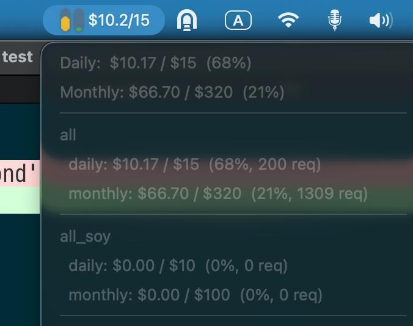
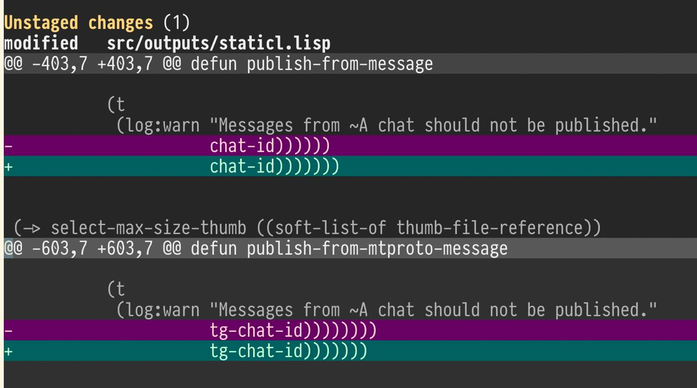
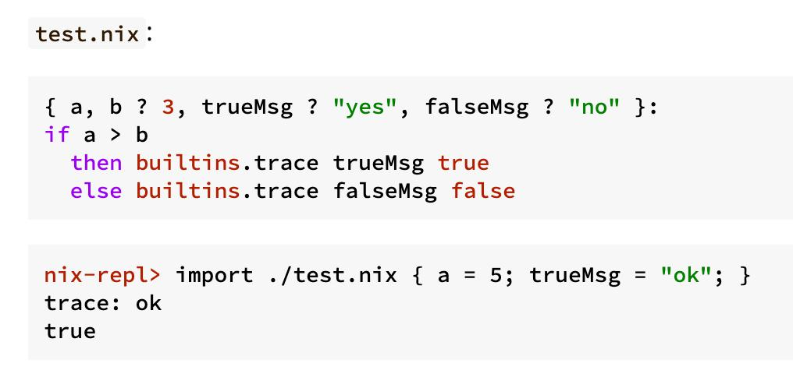

Страница 3
Некоторое время назад один из коллег опубликовал свою поделку, которая...
posted on 2026-04-02

Некоторое время назад один из коллег опубликовал свою поделку, которая показывает, сколько осталось квоты на использование нейросетей. Она была написана на Python с отдельной библиотекой для встраивания в тулбар на OS X. Я подумал, что это хороший проектик, чтобы попробовать переписать его на Common Lisp с помощью нейросетей.
Портируем microGPT на Common Lisp с помощью LLM
posted on 2026-03-14
Смотрите чего я навайбкодил: https://github.com/40ants/microgpt
Это порт на Common Lisp скрипта microgpt, который недавно опубликовал Andrej Karpathy.
Как военные могут использовать LLM?
posted on 2026-03-04

По мотивам предыдущего поста про готовность OpenAI убивать людей за пределами США мне стало интересно в каких областях можно применять современный ИИ в войне. Вот с десяток идей который без проблем сгенерила наша отечественная Алиса.
Вся эта история с OpenAI происходит на американском континенте?
posted on 2026-03-04
Кто-нибудь в курсе, что это за шумиха и почему даже некоторые известные личности отказываются от подписок OpenAI?
Как небольшой косяк LLM мне спать не давал
posted on 2026-02-25

На днях ввечеру буквально пару часов времени потерял на пустом месте, пытаясь отдебажить кейс, в котором у меня определение функции не появлялось в пакете после перекомпиляции приложения.
Дизайнеры Nix – наркоманы или гении?
posted on 2026-01-28

На своем ноутбуке с Mac OS я помимо Homebrew использую Nix для того, чтобы ставить пакеты. Почему я когда-то заинтересовался Nix? Так это потому, что в нем интересная концепция поколений, когда ты можешь безопасно попробовать какую-нибудь программу, а потом откатить все изменения в системе, которые были сделаны при установке этой программы.
Как проходил полуфинал MTS True Tech 2025
posted on 2026-01-01
Итак, рассказываю, как проходил полуфинал MTS TrueTech в 2025 году. Полуфинал заключался в том, что нам нужно было написать софт, который бы управлял реальным роботом так, чтобы робот мог пройти лабиринт из одного угла в противоположный. При этом структуру лабиринта, по которому будут запускать робота, мы не знали.
Бегущий в лабиринте
posted on 2025-12-09
В двух предыдущих постах я описывал, как решал первую задачу из отборочного этапа хакатона МТС True Tech Champ.
Всего в отборочном этапе было три задачи. Сегодня расскажу о второй. В ней нужно было провести робота по лабиринту. Причем робот должен был дойти от угла лабиринта до его центра. Раз так, значит банальное правило левой или правой руки могло и не помочь, потому что с ним робот мог ходить по внешней стене до бесконечности.
Более быстрый робот в первом задании MTS True Tech Champ
posted on 2025-11-20
Как я писал в предыдущей заметке, первая моя попытка провести робота через две комнаты из первого задания хакатона МТС True Tech была неудачной. Робот ехал медленно и сбивался с пути. Но в какой-то момент один из участников подсказал мне в чате, что нужно действовать иначе.
Первый этап хакатона МТС True Tech Champ 2025
posted on 2025-11-16
Как и обещал, начинаю серию постов про хакатон MTS True Tech 2025. Это технический хакатон, который разделен на две части. Первая часть алгоритмическая, а вторая часть робототехническая. Участвовать можно только в какой-то одной. Я решил попробовать себя в робототехнике. При этом опыта на момент старта было примерно ноль. Никогда раньше ничего не делал для роботов и было очень интересно попробовать.
Created with passion by 40Ants